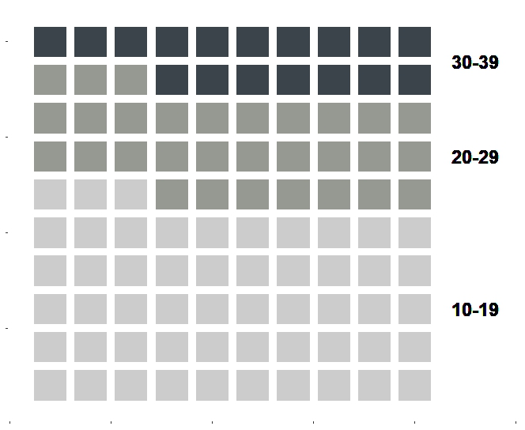
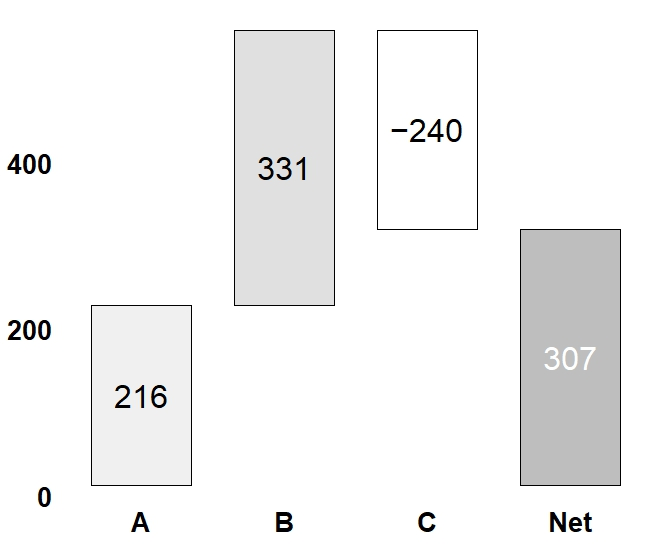

Comparison graphs are like the speed‑dating version of data — they help you quickly see what’s similar, what’s different, and what’s just awkward. They come in all shapes and sizes: bar graphs, bubble charts, bullet graphs, dot plots, heatmaps, Marimekko charts, Sankey diagrams, unit charts, and the ever‑dramatic waterfall graph. We’ll walk through each one using highway‑related data from Table 1, because nothing says fun like transportation analytics.
This is a waffle graph, which is what you get when data decides to express itself through tiny, evenly sized shapes. Think of it as a pixel‑art version of your dataset. In the 10×10 waffle setup shown in Figure 8, a solid 53% of the items land in the 10–19 range, which is noticeably higher than the counts in the other two ranges. Basically, that range is doing all the heavy lifting while the others are just along for the ride.

Figure 8. Unit Graph.
R Script Execution & Plot Generation Architecture
The following optimized ggplot2 framework generates a clean, warning-free unit graph by explicitly mapping data point variables, standardizing linear tracking scales up to a 400-count threshold ceiling, and purging default chart grid lines to maximize executive clarity.
remotes::install_github("liamgilbey/ggwaffle")
group <- c("10-19","20-29","30-39")
value <- c(53, 30, 17)
waffle_matrix <- matrix(nrow=100, ncol=3)
colnames(waffle_matrix) <- c("x", "y", "range")
i <- 1; j <- 1; k <- 1
counter <- value[1]
name1 <- group[1]
for (l in 1:counter){
waffle_matrix[k,] <- c(i, j, name1)
k <- k+1
if(i<10) {i <- i+1}
else {
i <-1
if(j<10) {j <- j+1} else (j <-1)
}
}
counter <- value[2]
name1 <- group[2]
for (l in 1:counter){
waffle_matrix[k,] <- c(i, j, name1)
k <- k+1
if(i<10) {i <- i+1}
else {
i <-1
if(j<10) {j <- j+1} else (j <-1)
}
}
counter <- value[3]
name1 <- group[3]
for (l in 1:counter){
waffle_matrix[k,] <- c(i, j, name1)
k <- k+1
if(i<10) {i <- i+1}
else {
i <-1
if(j<10) {j <- j+1} else (j <-1)
}
}
df2 <- as.data.frame(waffle_matrix) %>% mutate(across(c(x, y), as.integer))
plot8 <- ggplot(df2, aes(x, y, fill = range)) +
ggwaffle::geom_waffle() +
scale_fill_manual(values = c("#cccccc", "#969892", "#3b444b")) +
labs(x = NULL, y = NULL) + # Removes both x and y axis titles
theme(plot.title = element_blank(),
axis.title.x = element_blank(),
axis.title.y = element_blank(),
axis.text.x = element_blank(),
axis.text.y = element_blank(),
legend.position = "none",
panel.background = element_blank()) +
expand_limits(x = 12)
text1 <- group[1]; text2 <- group[2]; text3 <- group[3]
plot8 + geom_text(data = NULL, x = 11.5, y = 3, label = text1, size=6, fontface = "bold") +
geom_text(data = NULL, x = 11.5, y = 7, label = text2, size=6, fontface = "bold") +
geom_text(data = NULL, x = 11.5, y = 9.5, label = text3, size=6, fontface = "bold") +
coord_cartesian(clip = "off")
Waterfall Graph
This is basically the storytelling bar graph. It walks you through how an initial value gets nudged up by the good stuff, dragged down by the not‑so‑good stuff, and finally lands on a grand total. In Figure 9, you can see items A and B adding to the pile, item C subtracting from it, and the whole thing settling at a neat net total of 307 counts. It’s like watching your data balance its checkbook.

Figure 9. Waterfall Graph.
R Script Execution & Plot Generation Architecture
The following optimized ggplot2 framework generates a clean, warning-free waterfall graph by explicitly mapping data point variables, standardizing linear tracking scales up to a 400-count threshold ceiling, and purging default chart grid lines to maximize executive clarity.